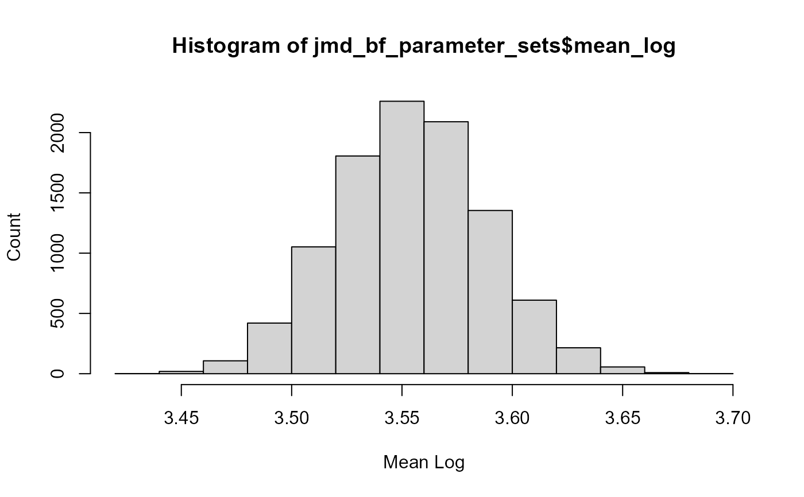

LP3 distribution parameters sets of volume-frequency curve results from RMC-BestFit 2.0.
Format
A data frame with 10000 rows and 3 columns:
- mean_log
Mean of log-transformed values
- sd_log
Standard deviation of log-transformed values
- skew_log
Skewness of log-transformed values
- log_likelihood
Log-likelihood of parameter set
Examples
sapply(jmd_bf_parameter_sets,class)
#> mean_log sd_log skew_log log_likelihood
#> "numeric" "numeric" "numeric" "numeric"
jmd_bf_parameter_sets[sample(nrow(jmd_bf_parameter_sets), 5), ]
#> mean_log sd_log skew_log log_likelihood
#> 2794 3.555069 0.3634390 0.5914373 -1093.057
#> 3086 3.529677 0.3790391 0.7997745 -1092.884
#> 7809 3.476658 0.3689670 0.6772425 -1095.883
#> 795 3.645677 0.4223180 0.4147200 -1096.925
#> 2245 3.518192 0.3528804 1.0352864 -1094.540
hist(jmd_bf_parameter_sets$mean_log,
xlab = "Mean Log", ylab = "Count")
